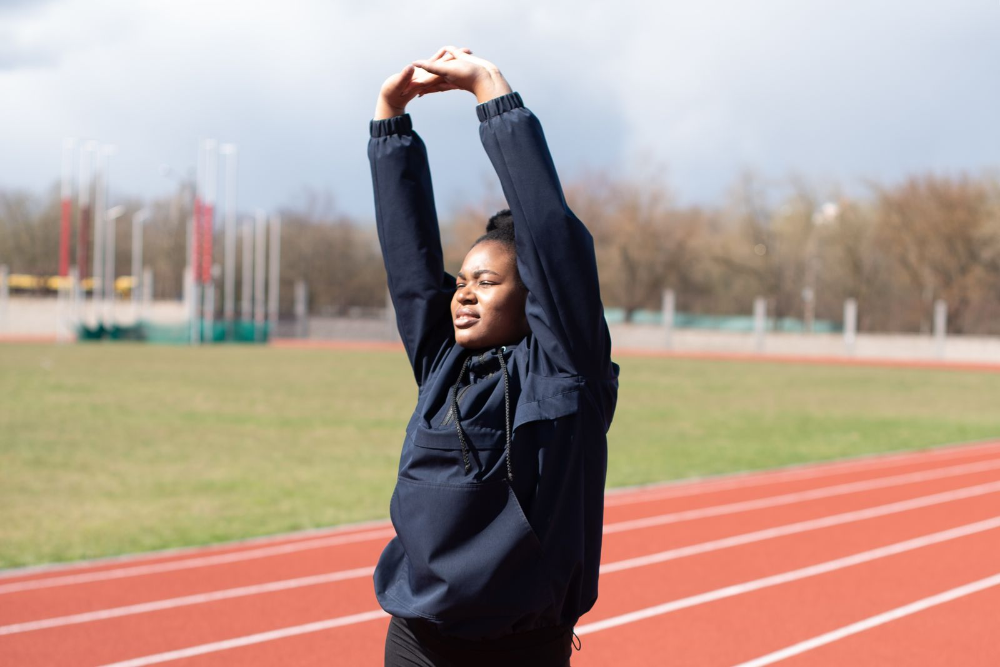

MOVE BETTER.
RECOVER
STRONGER.
Personalized physiotherapy and rehabilitation support. For the everyday moves. And the extraordinary ones.
MEANINGFUL MOVEMENT.01 / 03

HUMAN MOVEMENT / EVERY DAYWHERE DOES IT HURT?
Every movement has a story. Explore an area you’d like to discuss with a physiotherapist.
Discuss comfortable movement, strength and everyday activities with a physiotherapist. An assessment helps establish your next steps.
An information guide, not a diagnosis or individualized treatment recommendation.
LESS PAIN.
MORE
POSSIBILITY.
Care that starts with listening. A plan that moves with you.
Our Approach 01—03 / INDIVIDUAL AT EVERY STAGE
01—03 / INDIVIDUAL AT EVERY STAGEASSESS
Understand your movement, your concerns and your goals.
REHABILITATE
Build an individual plan with guided, appropriate activity.
RETURN TO ACTIVITY
Review progress together and plan your next steps.
BUILT AROUND YOUR MOVEMENT.
From a setback to a new starting point. Explore support for your individual goals.


YOUR JOURNEY. STEP BY STEP.
Clear next steps, from your first conversation to ongoing support.
- 01
Listen & assess
Discuss what matters to you.
- 02
Make a plan
Agree on appropriate goals.
- 03
Move together
Work through guided sessions.
- 04
Build consistency
Follow clinician-supplied home plans.
- 05
Review & adapt
Reflect on progress and adjust.
HUMAN CARE.
INDIVIDUAL
ATTENTION.
Good rehabilitation is a partnership. Get to know the people who will listen, guide and support your movement.
Meet the Therapy Team
Built for your verified team.
Illustrative photography. Clinician profiles are awaiting clinic details.YOUR RECOVERY.
IN YOUR HANDS.
A quieter way to stay organized. Request a session, follow assigned plans and keep your records in one place.
Explore the Patient PortalLocal preview. No real patient records are connected.
A clearer view of your care.
Request a preferred date and time
Track clinician-assigned activities
Keep the important details together
LET’S GET YOU
MOVING FORWARD.
A conversation is a good place to start. Tell us what you want to get back to.
Request an Assessment Request only. A clinic team must confirm your session.